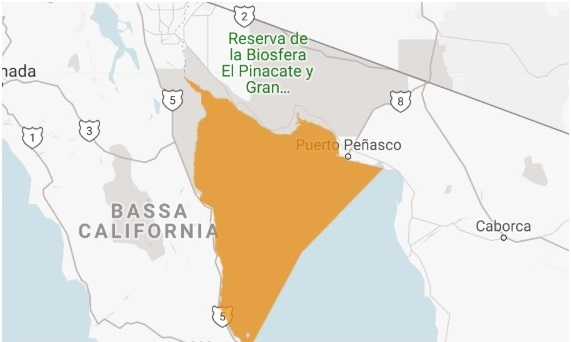
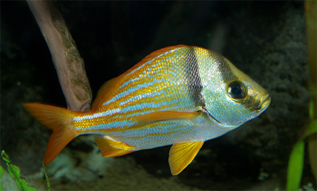

Le vaquitas usano suoni acuti per comunicare tra loro e per l'ecolocalizzazione per navigare attraverso i loro habitat. Di solito si nutrono e nuotano a passo lento. Le vaquitas evitano le barche e sono molto evasive. Si alzano per respirare con un lento movimento in avanti e poi scompaiono rapidamente. Questa mancanza di attività in superficie li rende difficili da osservare.
Le vaquitas di solito sono da sole a meno che non siano accompagnate da un vitello, il che significa che sono meno sociali di altre specie di focene. Possono anche essere più competitivi durante la stagione degli amori.
Sono le uniche specie appartenenti alla famiglia delle focene che vivono in acque calde. Le vaquitas sono predatori non selettivi.
HABITAT
L'habitat della vaquita è limitato all'area settentrionale del Golfo di California, o Mare di Cortez. Vivono in lagune poco profonde e torbide lungo le coste. Raramente nuotano più in profondità di 30 m (100 piedi) e sono noti per sopravvivere in lagune così superficiali che le loro schiene sporgono sopra la superficie. La vaquita è più spesso avvistata in acque profonde da 11 a 50 m (da 36 a 160 piedi), da 11 a 25 km (6,8 a 16 mi) dalla costa, su fondi di limo e argilla. Tendono a scegliere habitat con acque torbide, perché hanno un alto contenuto di nutrienti, che è importante perché attrae i piccoli pesci, calamari e crostacei sui quali si nutrono. Sono in grado di resistere alle notevoli fluttuazioni di temperatura tipiche di acque basse e torbide e lagune.
DIETA
Le vaquitas tendono a foraggiare vicino alle lagune. Tutte le 17 specie di pesci che si trovano negli stomachi vaquita possono essere classificate come specie demersali o bentoniche che vivono in acque relativamente basse nell'alto Golfo della California. Le vaquitas sembrano essere alimentatori non selettivi su crostacei, piccoli pesci, polpi e calamari in quest'area. Alcune delle prede più comuni sono i teleostei (pesci con scheletri ossei) come grugniti, gracidanti e trote di mare. Come gli altri cetacei, le vaquitas possono usare l'ecolocalizzazione per localizzare le prede, in particolare perché il loro habitat è spesso torbido.
